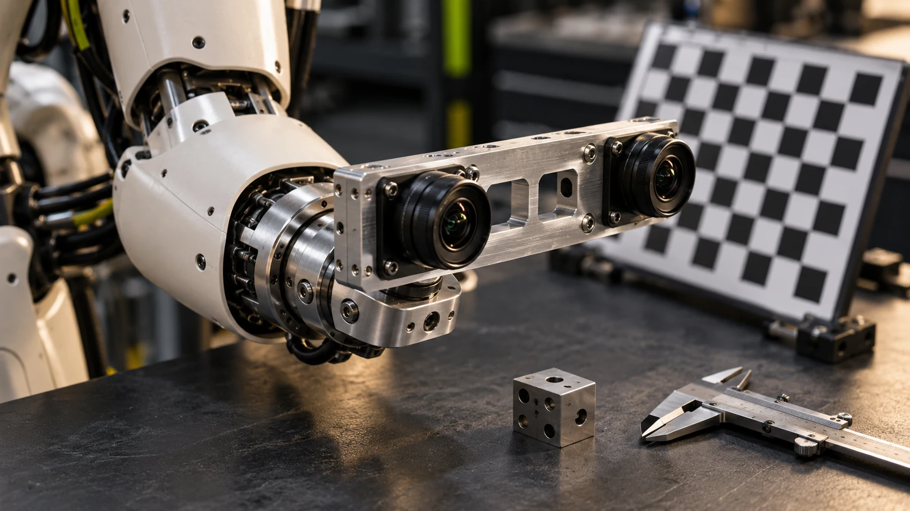

Treat camera-to-hand calibration as a maintained system configuration, with independent validation before relying on a robot reach.
A camera can produce a convincing view of an object while the robot reaches beside it. That mismatch does not automatically mean the camera is poor or the arm is inaccurate. The system may be combining observations expressed in different coordinate frames, using an outdated mounting relationship, or matching a fresh image with an older robot pose. Before buying a different sensor, make the connection between seeing and reaching explicit. A small, documented calibration exercise can turn an impressive demonstration into a result that another engineer can reproduce.
Separate the questions before collecting data
Start with a sketch of the actual installation. Is the camera fixed to a bench, mounted on the robot head, or carried beside the hand? Which frame describes the detected object, and which frame does the motion interface accept? Name those frames in ordinary language as well as in software. OpenCV documents camera calibration and hand-eye calibration as different operations; solving one does not establish the entire relationship between a camera, a wrist and a work surface.
Write the direction and units of each relationship beside the sketch. A value expressed in camera coordinates should not silently become a target in the robot base frame. Ask the integrator to explain one complete example from image observation to commanded target, including which configuration files supply each transformation. This is a practical review of the pipeline, not a demand to derive a calibration algorithm during a purchasing meeting.
Freeze the installation you intend to evaluate
Photograph the camera bracket, cable routing, target holder and robot tool before collecting observations. Record the relevant device identifiers, software versions and image-stream settings. A loose bracket or a target that moves between observations creates uncertainty that a more elaborate calculation cannot explain away. Check the mounting procedure with the supplier and use a configuration that the team can reproduce.
Keep the scope narrow. For a first bench evaluation, choose a small reachable region and a representative set of objects. Avoid making a successful calibration exercise stand for every height, viewpoint or lighting condition in the future application. If the planned robot will look from several head positions, describe those positions in the test plan rather than assuming that one attractive camera view represents them all.
Collect useful variation, then reserve a test set
Follow the calibration procedure supported by the chosen camera, robot and software stack. Collect observations that cover the intended working region and a useful range of orientations, rather than repeating nearly identical views because they are easy to obtain. Check that the target is visible and identifiable in each retained observation. Save the original observations and the corresponding robot state so that a later investigation has more evidence than a final matrix.
Set aside a separate collection of validation conditions before tuning the setup. Use those conditions to ask whether the resulting transformation supports the actual task. For example, place a reference object at several agreed locations and compare the predicted position with an independent reference appropriate to the application. Do not report a fitting result from the calibration data as though it were an independent physical validation.

Check time as well as geometry
A setup that behaves well while stationary can reveal a different problem when the camera or target moves. Record which timestamps belong to camera capture, robot state and application processing. Confirm how the integration software associates an observation with the relevant robot pose. The ROS geometry2 project provides tools for maintaining coordinate transformations; the existence of such tools still leaves the team responsible for using an appropriate frame and time in its application.
Begin with an intentionally stationary comparison, then introduce the motion needed for the workflow. Keep the observation logs from both cases. If the result changes with speed or processing load, investigate that change before adjusting geometric parameters to compensate. Agree on the supported timing configuration with the integrator. A camera specification alone does not establish end-to-end timing behavior after networking, processing and motion control are combined.
Validate the reach without hiding the conditions
Define success in terms of the proposed job. A coarse object transfer and a close placement task may need different evidence. Describe the permitted position variation, the object presentation and any human assistance. Use the robot supplier’s supported commissioning process and agree on the physical trial procedure with the responsible team before attempting movement.
Record each attempt, including a missed approach, a refused target and a manual reset. Preserve the scene conditions and configuration alongside the outcome. A useful report distinguishes what was measured from what was assumed, and explains which unresolved errors could change the buying or integration decision. Avoid assigning a universal accuracy claim to a custom camera-and-robot combination after a short bench exercise.
Make recalibration a change-control decision
Keep a versioned calibration record with the mounting photographs, procedure, retained observations, configuration and validation results. Name the person who can approve its use in the application. Define which changes trigger another check: moving a bracket, replacing a camera, changing a tool, updating relevant software, or discovering a repeatable mismatch. The team can then restore a known configuration instead of trying to remember how the previous demonstration was assembled.
When evaluating new vision hardware, compare the integration work as well as the headline features. Orbbec’s Gemini 435Le page, for example, describes an industrial stereo camera with Ethernet and PoE. That is a useful source for interface planning, but it does not establish compatibility or reach accuracy with a particular humanoid. Bring the sensor supplier and robot integrator back to the same workflow sketch and ask who owns each remaining assumption.
Your next step.
- Draw and name the camera, robot, tool and target frames.
- Save the exact mounting and software configuration with the observations.
- Reserve independent validation conditions before tuning.
- Define which physical or software changes require another check.
Sources & further reading
Primary sources and manufacturer documentation for the examples and further investigation. Recommendations in this article are HUMANOID’s editorial guidance.
OpenCV: camera and hand-eye calibration documentation ↗ROS geometry2: coordinate transformation tools ↗Orbbec: Gemini 435Le official product information ↗Prepared and references reviewed: 27 October 2026. This original practical guide does not report an independent hardware test or establish compatibility between specific products.